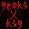
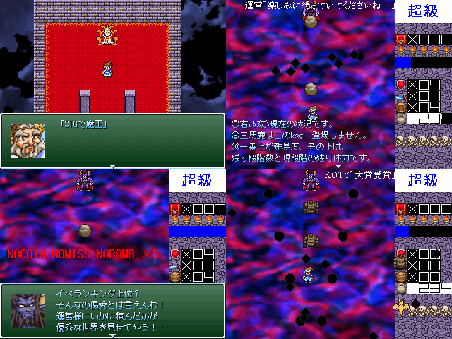

|
 |
№057 ksUNEIksgSTG |
|
 | |
| 作者：genksksgProject | |
| 作成ツクール：2000 | |
|
作者コメント(6/1更新) 無数のksgから作られたこの世界。 そこに、どんなksgよりもksなあの業界が現れた。 その業界は、基本無料でプレイヤーを集めた上で、 ksgに様々な要素を追加するために多量のGを積ませるところであった。 魔王が関わっていると言われているあのksg運営は特に酷く、 Gだけではなく戦闘に使えるものを略奪するなどしてこの世界を支配しよう としている。 という設定な魔王把握未満のksgです。 ※未完成版となりました。 続きや高難易度版を収録してまた来るかと思います。 こんなksg誰も期待しないと思いますが… | |
|
管理人コメント 一見ただの魔王把握な左上のSSだけど、 STG部分では大掛かりな仕掛けも期待させてくれる画像群だぞ！ | |
| ダウンロード(3.73mb) / 感想掲示板 | |
| 前の作品 / 次の作品 / TOPへ戻る | |